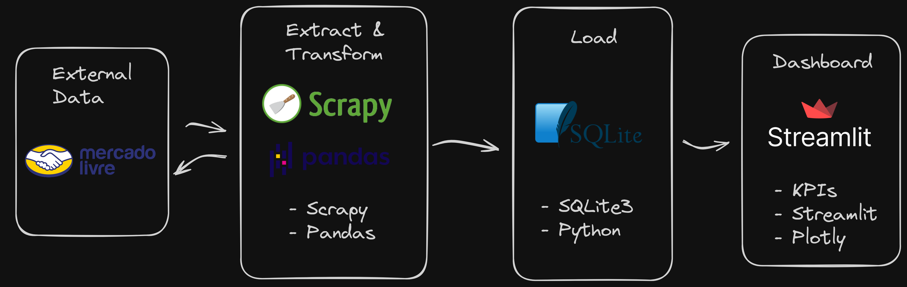

🎥 Rede Social


• Tecnologias • Solução • Rede Social
Projeto Pipeline ETL com Python para Obter Informações de Produtos do Mercado Livre
Projeto de ETL GitHub.
Tecnologias


ETL E-commerce Mercado Livre

Proposta do Projeto
Imagine que uma marca de tênis deseja avaliar sua relevância no ecossistema do Mercado Livre. Para isso, é necessário obter KPIs relacionadas ao segmento de tênis na plataforma. O objetivo é coletar informações detalhadas e implementar um dashboard que facilite a visualização e análise desses dados.
Sua equipe de Dados ficou responsável por realizar esse projeto.
Solução do problema de negócio
Etapas
- Etapa 1: Extração dos dados usanda Web Scraping;
- Etapa 2: Transformação dos dados usando Pandas;
- Etapa 3: Carregamento dos dados em uma banco de dados SQLite3;
- Etapa 4: Consumindo os dados usando uma Dashboard com Streamlit;
Pipeline

Estrutura do Projeto
.
├── data
│ ├── data.json
│ └── quotes.db
├── docs
│ ├── about.md
│ ├── index.md
│ ├── javascripts
│ └── stylesheets
├── mkdocs.yml
├── poetry.lock
├── problema_de_negocio.md
├── pyproject.toml
├── README.md
├── reports
│ └── docs
├── requirements.txt
└── src
├── coleta
├── dashboard
├── scrapy.cfg
└── transformacao
Como executar o Projeto
Primeiramente, acesse a pasta do projeto e instale as dependências usando o pip ou o Poetry. Para isso, execute um dos comandos abaixo:
poetry install
ou
pip install -r requirements.txt
Agora em seguida, para executar cada etapa, siga as instruções abaixo:
Extração dos dados usanda Web Scraping
scrapy crawl mercadolivre -o ../data/data.json
Transformar e carregar
python src/transformacao/main.py
Visualizar Dashbard
streamlit run src/dashboard/app.py
🎥 Rede Social